Work samples
Fact sheets, slides, and maps
A look at the work behind the projects: fact sheets I wrote and designed, slides from group presentations, a TB prevention plan, and maps built in ArcGIS and Tableau. Select any image to see it full size.
- Fact sheets
- Infectious disease
- Presentations
- Brucellosis, deforestation, TB in Uganda
- Maps
- ArcGIS Online, Tableau
Infectious disease fact sheets
One-page summaries I researched, wrote, and designed. Each covers the agent, transmission, signs and symptoms, lab diagnosis, treatment, who is at risk, and prevention, with cited sources. Five of my nine fact sheets are shown here.

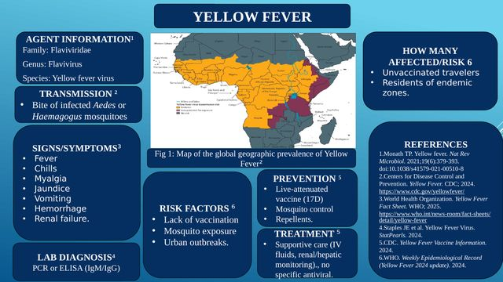

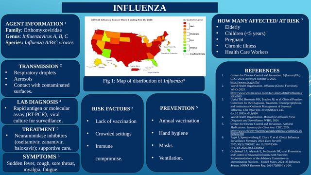

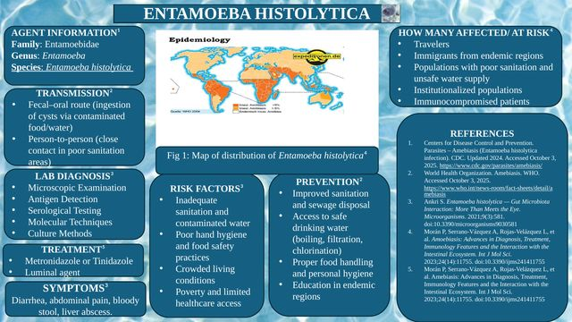

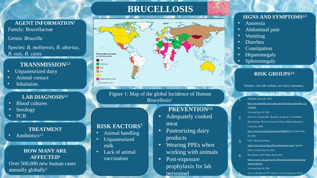

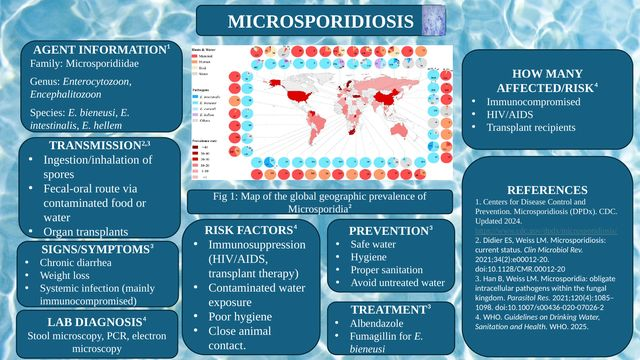
Brucellosis: A Neglected Zoonosis
An epidemiologic profile, presented with Haley Gebhard and Chelsea Mazonde: transmission through unpasteurized dairy and occupational exposure, the case definition, host and behavioral risk factors, prevention, and gaps in surveillance.

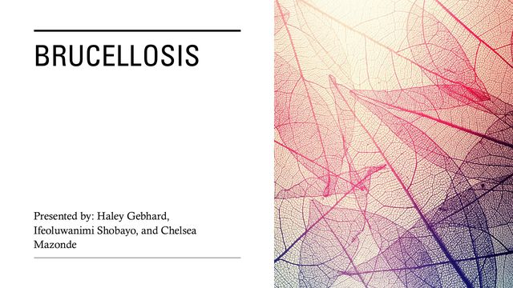

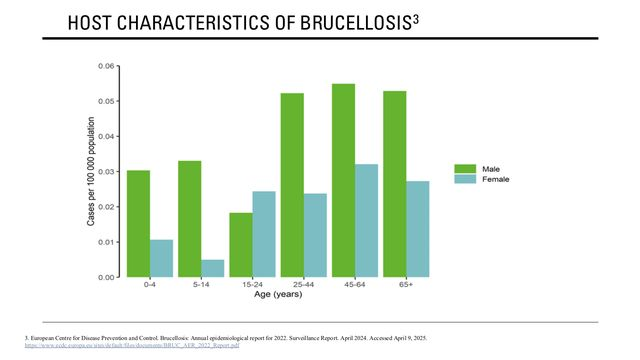

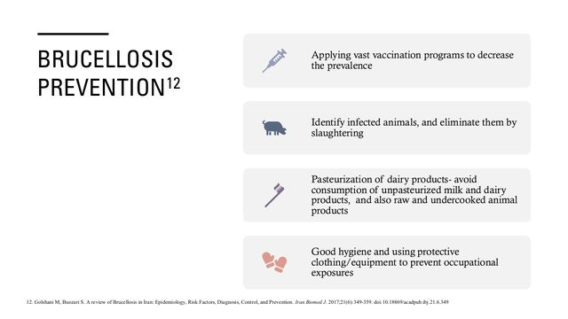
Deforestation as a Public Health Issue
Presented with Chelsea Mazonde. We linked forest loss in Nigeria and Zimbabwe to respiratory illness, malaria, food insecurity, and waterborne disease.

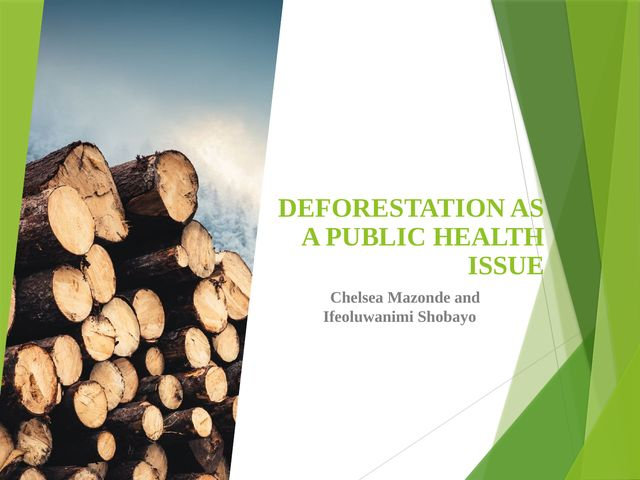

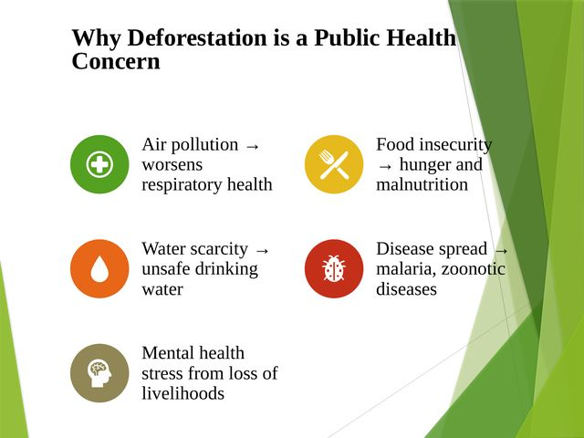
TB-Free Kampala: intervention plan
My intervention for a group analysis of tuberculosis in Uganda: a 12-month program with Village Health Teams to raise preventive therapy uptake from 40% to 70% among eligible adults in Kampala, with a $45,800 budget.

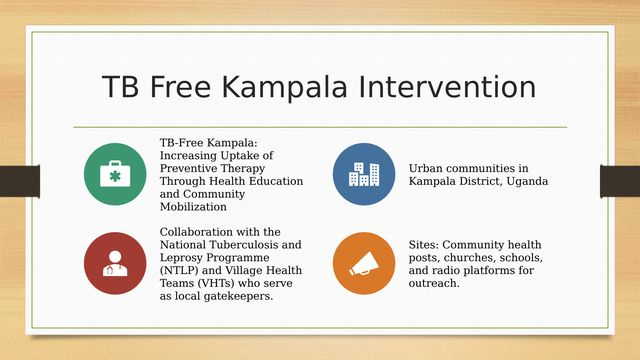

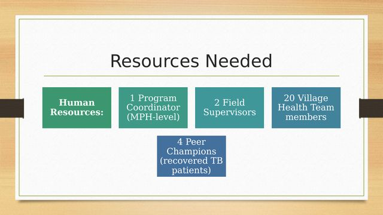

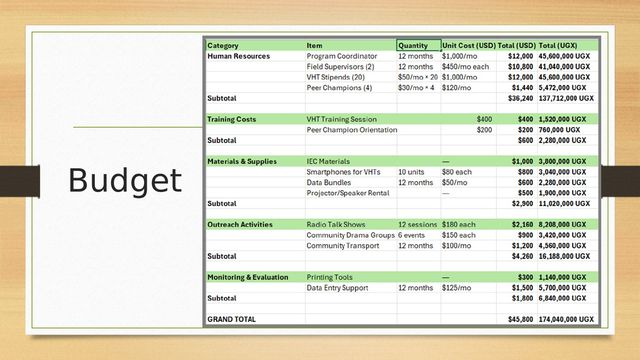
Maps and dashboards
A graduated-symbol map of Detroit public high schools in ArcGIS Online, later published as a StoryMap, plus Tableau practice with Tableau’s Superstore sample data. On the Tableau maps I matched each color scheme to its variable: diverging for profit (gains and losses around zero), sequential for sales, and categorical for product type. For public health examples, see my 1854 cholera heat map and Virginia county mental health analysis.

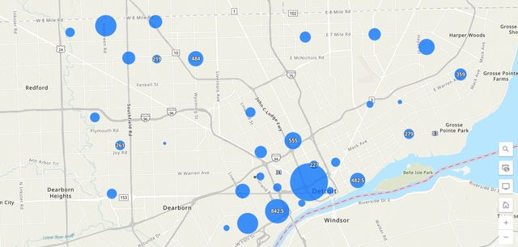

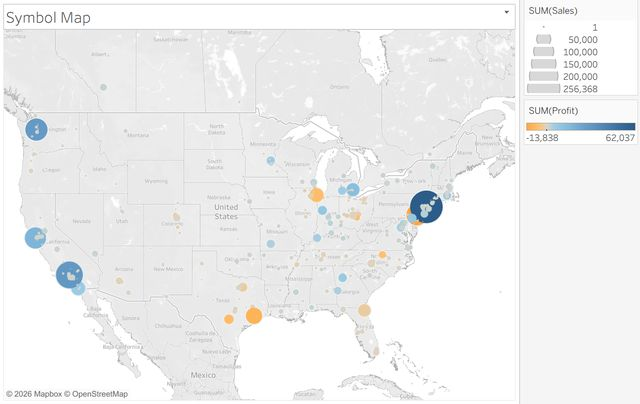

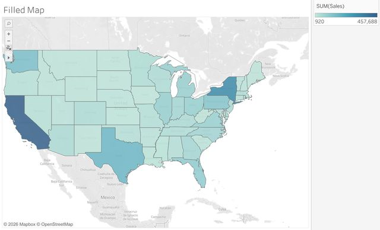

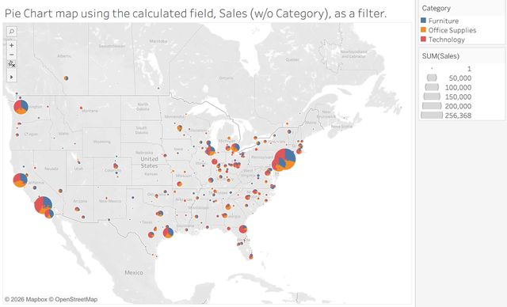

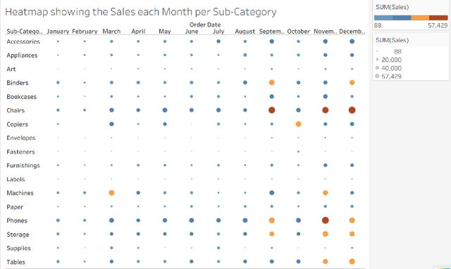